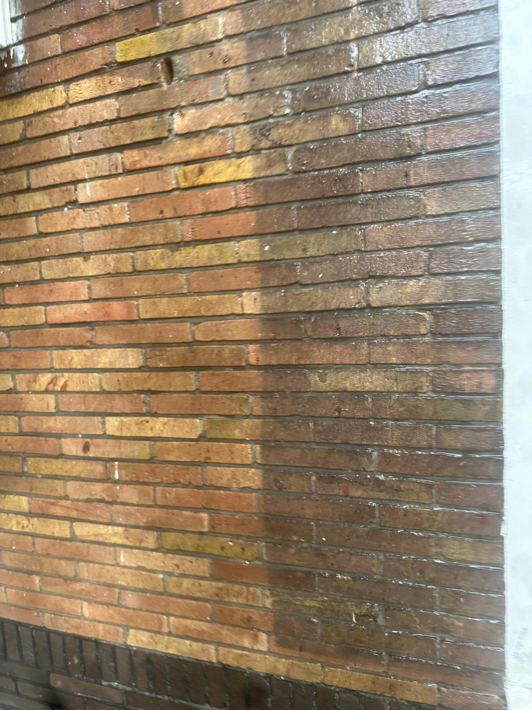
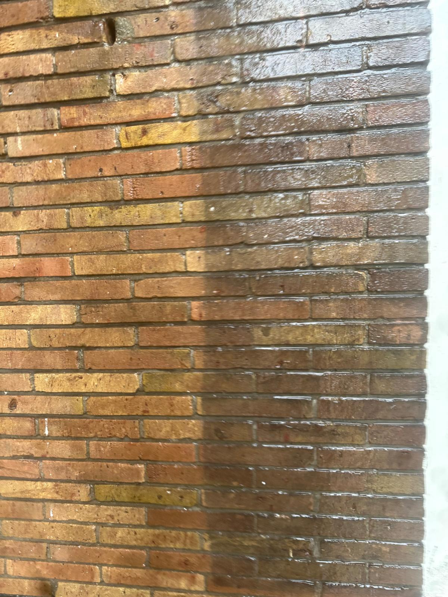
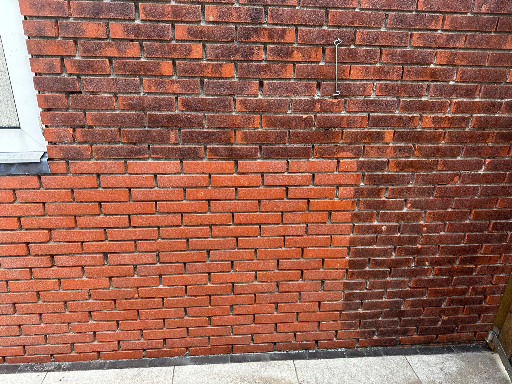

Onze Projecten
Een greep uit onze succesvolle gevelrenovaties





Uw gevel is het visitekaartje van uw pand. Wij combineren traditioneel vakmanschap met moderne technieken voor een onberispelijk en duurzaam resultaat.
Met meer dan 25 jaar ervaring is Johan van der Meer een begrip in gevelrenovatie en -reiniging. Of het nu gaat om monumentale panden aan de grachtengordel of moderne woningen, wij bieden een totaalpakket aan oplossingen om uw gevel te beschermen en verfraaien.
Een greep uit onze succesvolle gevelrenovaties



© 2026 Van der Meer Dienstengroep B.V.